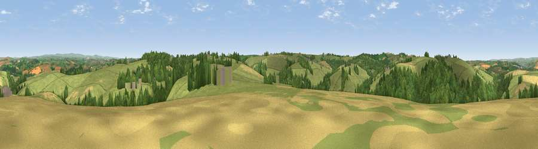

Viewpoint near Atherington
#18149 in England · top 36% of its area beats it · near AtheringtonWhere it is
The exact computed spot (SS 57625 22825). Click the marker for map links.
The view, rendered

A 360° render of this exact spot computed from the terrain model, tree cover and land cover — summer colours, afternoon light, calibrated against photographs of famous viewpoints. Real trees, hedges and buildings will differ in detail.
The panorama
Grey silhouette: terrain skyline in each direction (720 bearings, Earth curvature and refraction included). Dashed green: skyline with trees (+15 m) and buildings (+8 m) as obstacles. Blue strip: how far the ground is visible on each bearing.
Where the view opens
Wedge length = distance to the farthest visible ground on that bearing (vegetation-aware). Rings at 10, 25 and 50 km.
What fills the view
67% grassland · 24% woodland · 9% cropland ·
Angular shares of the visible panorama (visual magnitude), not map area. Landscape diversity 0.37 (0–1 Shannon).
Key numbers
More beautiful places nearby
The staircase of upgrades: each row has a higher view potential than everything closer. Driving times are estimates from straight-line distance, calibrated against real road routing — check an actual route before setting out.
| Place | Direction | Drive | Score |
|---|---|---|---|
| Viewpoint near Yarnscombe | NW · 1 km | ~4 min | 57.4 |
| Viewpoint near Yarnscombe | W · 3 km | ~8 min | 61.3 |
| Viewpoint near High Bickington | ESE · 5 km | ~10 min | 62.2 |
| Viewpoint near High Bullen | WSW · 5 km | ~12 min | 71.2 |
| Codden Hill | N · 7 km | ~14 min | 81.3 |
| Viewpoint near Parkham | W · 19 km | ~32 min | 81.7 |
| Viewpoint near Bucks Mills | W · 20 km | ~34 min | 84.0 |
| Viewpoint near Woolacombe | NNW · 22 km | ~37 min | 84.7 |
50.98717, -4.02986 · source: screening · position refined by local search. Computed location — check access rights before visiting.